전기철도기사 (2012-08-26 기출문제)
1과목: 전기철도공학
1. 전차선 및 보조 조가선의 횡진을 방지하는 장치는?
- 진동방지장치
- 곡선당김장치
- 장력조정장치
- 유류저지장치
(정답률: 알수없음)

2. T-bar 방식의 전차선로에서 흐름방지장치를 터널 내 및 역 승강장에 설치할 때 어떤 종류의 흐름방지장치를 설치하는가?
- 원형 흐름방지장치
- 삼각형 흐름방지장치
- 마름모꼴 및 특수 흐름방지장치
- 타원형 흐름방지장치
(정답률: 알수없음)
3. 강체 전차선로(교류 R-Bar방식)에서 사용하는 브래킷의 종류가 아닌 것은?
- 이동형
- 단축형
- 고정형
- 가동형
(정답률: 알수없음)
4. 순시최대출력 Z=Y+C√Y에서 "Y"가 의미하는 것은?
- 1시간 최대출력[kW]
- 1일 평균전력[kW]
- 1개 열차의 최대전류[A]
- 전력소비율
(정답률: 알수없음)
5. 경간 60[m], 표준장력 1000[kgf], 합성 전차선의 단위중량 1.795[kg/m], 행거의 최소길이 0.15[m] 일때 전차선 가고 H[mm]는?
- 약 560
- 약 710
- 약 808
- 약 960
(정답률: 알수없음)
6. 다음 중 순환전류에 대한 설명으로 거리가 먼 것은?
- 주회로(전차선) 이외의 전선, 가선금구 등에 흐르는 전류이다.
- 균압방식을 사용하여 순환전류에 따른 사고를 막는다.
- 가압빔, 진동방지장치 등 직접 전선과 연결되고 있는 가선금구는 완전접속 또는 절연한다.
- 순환전류는 귀선로에서만 발생한다.
(정답률: 알수없음)
7. 경간 중앙 드로퍼에 설치되는 M-T균압선의 최대 설치간격[m]은? (단, 속도 등급 250킬로급 이상)
- 100
- 200
- 300
- 400
(정답률: 알수없음)
8. 전선에 상당량의 빙설이 부착된 후 탈락하게 되면 전선이 도약하게 되고 선간 혼촉, 용단 등의 피해가 발생되는 현상은?
- Slack
- Damper
- Sleet jump
- Cant
(정답률: 알수없음)
9. 전주의 안전율에 대한 설명으로 가장 거리가 먼 것은?
- 철근콘크리트주는 파괴하중에 대하여 2 이상
- 철주는 소재 허용응력에 대하여 1 이상
- 목주는 신설시에 있어서 파괴하중에 대하여 3 이상
- 목주는 신설시 파괴하중에 대하여 1 이상
(정답률: 알수없음)
10. 고속철도 전차선의 지지점에서 편위가 없다면, 경간의 중심에서 곡선의 편위값 F를 구하는 식은? (단, L은 경간의 길이, R은 곡선반경)
- F = (L2/4) × R
- F = (L/4) × R
- F = (L2/8) × R
- F = (L/8) × R
(정답률: 알수없음)
11. 익스팬션 조인트개소의 T-Bar 상호 간격은 몇 [mm]를 표준으로 하는가?
- 100
- 200
- 300
- 400
(정답률: 알수없음)
12. 제3궤조방식의 급전레일(power Rail)의 가선방식으로 거리가 가장 먼 것은?
- 상부접촉방식
- 하면접촉방식
- 측면접촉방식
- 후면접촉방식
(정답률: 알수없음)
13. 교류 전철변전소 주변압기의 M상과 T상간의 위상차는 몇 도인가?
- 30°
- 60°
- 90°
- 120°
(정답률: 알수없음)
14. 고속철도에서 두 전차선 상호간을 이격시켜 공기절연을 이용하는 에어섹션(Air Section) 평행구간의 두 전차선간 이격거리[mm]는?
- 200
- 300
- 400
- 500
(정답률: 알수없음)
15. 25[kV] 교류강체방식의 브래킷 부품 중 전차선을 구조물과 절연하고 R-bar를 붙들어 주는 역할을 하는 것은?
- 꼬리금구
- 머리금구
- 회전금구
- 애자
(정답률: 알수없음)
16. 변형Y형 심플커티너리 조가방식에서 Y선의 장력은 조가선 표준장력의 몇 [%]정도로 하는가?
- 10
- 20
- 30
- 40
(정답률: 알수없음)
17. 철도횡단 궤도면상 가공 급전선의 높이는 얼마이상으로 하는가?
- 3.5[m] 이상
- 4[m] 이상
- 5[m] 이상
- 6.5[m] 이상
(정답률: 알수없음)
18. 곡선반지름이 600[m]인 곡선로에서, 건축한계는 직선로에서의 건축한계에 몇 [mm]를 추가해야 하는가?
- 약 50
- 약 75
- 약 83
- 약 100
(정답률: 알수없음)
19. 경간 중앙에서의 전차선 편위 값 [uN]을 구하는 계산식은? (단, uN1, uN2는 양단 전주에서의 편위값: 곡선 외측이 +값)
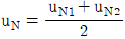
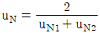
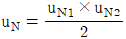
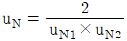
(정답률: 알수없음)
20. 속도등급 300킬로급 이상의 전차선과 가동브래킷의 수평파이프 중심간 표준거리[mm]는?
- 350
- 420
- 600
- 800
(정답률: 알수없음)
2과목: 전기철도 구조물공학
21. 가동 브래킷의 호칭이 "G3.0 L960 I"라고 되어 있다면, 여기에서 L의 의미는?
- 가고
- 전차선 높이
- 게이지
- 작용력에 대한 형식
(정답률: 알수없음)
22. 그림과 같은 직사각형 단면으로서 (a)는 (b)보다 몇 배 강한가?
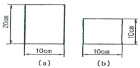
- 2배
- 3배
- 4배
- 6배
(정답률: 알수없음)
23. 전기철도 구조물의 설계에서 일반적으로 단독 지지주로 취급하여 계산하는 지지주가 아닌 것은?
- 가동브래킷 지지주
- 스팬선빔 지지주
- 크로스빔을 지지하는 전주
- V형빔 지지주
(정답률: 알수없음)
24. 경간이 45[m]이고 곡선반지름이 600[m]인 곡선로에서 지지점과 경간 중앙에서의 편위가 같을 때 전차선의 편위는 약 몇 [mm]인가?
- 210
- 250
- 300
- 350
(정답률: 알수없음)
25. 부재의 단면적이 40[cm2]이고 길이가 2.4[m]인 강봉에 18[t]의 인장력이 작용할 경우 강봉의 늘어난 길이[mm]는 얼마인가? (단, 강봉의 영계수(E)는 2400[t/cm2]이고 부재의 자중은 무시한다.)
- 0.45
- 0.5
- 0.55
- 0.6
(정답률: 알수없음)
26. 지표면에서 높이가 10[m]인 단독지지주에 28[kgf/m]의 수평분포하중이 작용하는 경우 지면과의 경계점 모멘트[kgfㆍm]는?
- 280
- 560
- 1400
- 2800
(정답률: 알수없음)
27. 전파속도 250[m/㎲], 뢰의 파두장이 1.5[㎲]일 때 피뢰기의 직선적 유효보호 범위[m]는?
- 170.5
- 187.5
- 197.5
- 207.5
(정답률: 알수없음)
28. 그림과 같은 단순보에서 A점의 반력이 B점 반력의 2배가 되도록 하는 거리 x는 얼마인가?
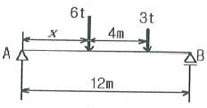
- 약 2.67m
- 약 3.17m
- 약 3.67m
- 약 4.17m
(정답률: 알수없음)
29. 건식게이지가 3.1[m]이고 전주 지름이 300[mm]일 때 전차선 기울기를 120[mm] 하면 최소 브래킷 게이지[mm]는?
- 2830
- 2890
- 2930
- 2970
(정답률: 알수없음)
30. 다음 그림과 같은 단면의 도심에 대한 단면 2차 극모멘트는? (단, h=2b이다.)(오류 신고가 접수된 문제입니다. 반드시 정답과 해설을 확인하시기 바랍니다.)
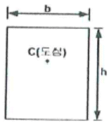
- (4/3)b4
- (3/4)b4
- (5/6)b4
- (7/6)b4
(정답률: 알수없음)
31. 지반에는 기존지반과 신설성토와 같이 불안정 지반이 있는데 지반조건에 따라 기초강도에 영향을 주게 되므로 보정해야 한다. 이 보정계수를 무엇이라 하는가?
- 지형계수
- 형상계수
- 강도계수
- 안전계수
(정답률: 알수없음)
32. 지름 8[cm]의 환봉에 4000[kg]의 압축하중이 작용하고 있다. 이때 압축응력은 약 얼마[kgf/cm2]인가?
- 79.6
- 82.7
- 85.9
- 89.6
(정답률: 알수없음)
33. 가공전차선로 철주의 안전율은 특별한 경우를 제외하고 소재허용응력에 대하여 얼마 이상으로 하여야 하는가?
- 1.0
- 1.2
- 1.5
- 2.0
(정답률: 알수없음)
34. 한 변의 길이가 d인 정사각형 단면을 가진 부재가 점 A에서 하중 12ton을 받고 있을 때 필요한 정사각형 최소단면의 한 변의 길이 d는 약 몇 cm 인가? (단, 부재의 허용 인장응력은 1200kgf/cm2 이고 자중은 무시한다.)
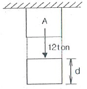
- 2.55
- 3.16
- 3.51
- 4.12
(정답률: 알수없음)
35. 전철구조물의 강도계산과 관계가 먼 것은?
- 기압
- 기온
- 풍속
- 눈
(정답률: 알수없음)
36. 지선과 전주와의 설치 각도는 몇 도를 표준으로 하는가?
- 25°
- 35°
- 45°
- 60°
(정답률: 알수없음)
37. 직류전기철도에서의 전식을 방지하기 위한 방식 중 레일을 접지 양극으로 하는 외부 전원법으로서 외부에서 직류전원을 레일과 지중매설 금속체 사이에 가하는 방법은?
- 직접배류방식
- 선택배류방식
- 강제배류방식
- 직ㆍ간접배류방식
(정답률: 알수없음)
38. 그림과 같은 구조물에서 부정정차수가 가장 많은 것은?
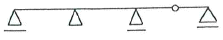
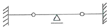
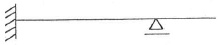
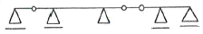
(정답률: 알수없음)
39. 표준장력이 250[kgf]이고 경간이 50[m]인 부급전선(AI 200mm2)이 풍압하중을 받을 때의 이도는 약 몇 [m] 인가? (단, 부급전선의 단위중량은 0.5598[kg/m] 이다.)
- 0.35
- 0.70
- 1.⑤
- 1.40
(정답률: 알수없음)
40. 그림과 같은 힘에 대하여 0점에 대한 모멘트[kgㆍcm]는?
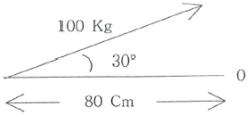
- 2000[kgㆍcm]
- 3000[kgㆍcm]
- 4000[kgㆍcm]
- 5000[kgㆍcm]
(정답률: 알수없음)
3과목: 전기자기학
41. 그림과 같은 직각 코일이
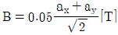
인 자계에 위치하고 있다. 코일에 5[A] 전류가 흐를 때 Z축에서의 토크 [Nㆍm]는?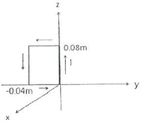
- 2.66×10-4ax[Nㆍm]
- 5.66×10-4ax[Nㆍm]
- 2.66×10-4az[Nㆍm]
- 5.66×10-4az[Nㆍm]
(정답률: 알수없음)
42. 공극(air gap)이 δ[m]인 강자성체로 된 환상 영구자석에서 성립하는 식은? (단, ℓ[m]는 영구자석의 길이이며 ℓ ≫ δ 이고, 자속밀도와 자계의 세기를 각각 B[Wb/m2, H[AT/m] 라 한다.)
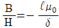
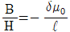
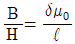
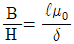
(정답률: 알수없음)
43. 정전계에 주어진 전하분포에 의하여 발생되는 전계의 세기를 구하려고 할 때 적당하지 않은 방법은?
- 쿨롱의 법칙을 이용하여 구한다.
- 전위를 이용하여 구한다.
- 가우스법칙을 이용하여 구한다.
- 비오-사바르의 법칙에 의하여 구한다.
(정답률: 알수없음)
44. 인덕턴스의 단위와 같지 않은 것은?
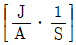
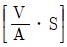
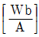
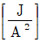
(정답률: 알수없음)
45. 자장 B=3ax-5ay-6az[Wb/m2] 내에서 점전하 0.2[C]이 속도 v=4ax-2ay-3az[m/s] 로 움직일 때 이 점전하에 작용하는 힘의 크기는 몇 [N]이 되는가?
- 6.98[N]
- 7.98[N]
- 8.98[N]
- 9.98[N]
(정답률: 알수없음)
46. 그림과 같은 정방형관 단면의 격자점 ⑥의 전위를 반복법으로 구하면 약 몇 [V]가 되는가?
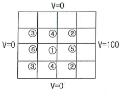
- 6.3[V]
- 9.4[V]
- 18.8[V]
- 53.2[V]
(정답률: 알수없음)
47. 두 개의 전기회로 간의 상호 인덕턴스를 구하는데 사용하는 방법은?
- 가우스의 법칙
- 플레밍의 오른손 법칙
- 노이만의 공식
- 스테판-볼쯔만의 법칙
(정답률: 알수없음)
48. 전계
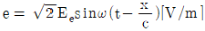
의 평면 전자파가 있다. 진공 중에서 자계의 실효값은 몇 [A/m]인가?- 0.707×10-3Ee
- 1.44×10-3Ee
- 2.65×10-3Ee
- 5.37×10-3Ee
(정답률: 알수없음)
49. 정현파 자속의 주파수를 3배로 높이면 유기기전력은?
- 2배로 감소
- 2배로 증가
- 3배로 감소
- 3배로 증가
(정답률: 알수없음)
50. Q=0.15[C]으로 대전하고 있는 큰 도체구에 그 반경이 큰 구의 그의 작은 도체구를 접촉했다가 떼면, 작은 도체구가 얻는 전하[C]는 얼마로 되는가?
- 0.01[C]
- 0.⑤[C]
- 0.1[C]
- 0.2[C]
(정답률: 알수없음)
51. 반지름 a, b인 두 구상 도체 전극이 도전율 k인 매질속에 중심거리 r만큼 떨어져 놓여 있다. 양 전극간의 저항은? (단, r>>a, b 이다.)
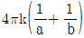
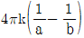
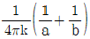
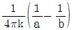
(정답률: 알수없음)
52. 매질 1은 나일론(비유전율 εs=4)이고, 매질 2는 진공일때 전속밀도 D가 경계면에서 각각 θ1, θ2의 각을 이룰 때 θ2=30° 라고 하면 θ1의 값은?
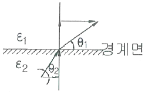
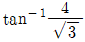
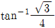
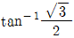
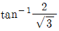
(정답률: 알수없음)
53. 무한장 솔레노이드에 전류가 흐를 때 발생되는 자계에 관한 설명으로 옳은 것은?
- 외부와 내부 자계의 세기는 같다.
- 내부 자계의 세기는 0 이다.
- 외부 자계는 평등 자계이다.
- 내부 자계는 평등 자계이다.
(정답률: 알수없음)
54. 물질의 자화 현상은?
- 전자의 자전
- 전자의 공전
- 전자의 이동
- 분자의 운동
(정답률: 알수없음)
55. 공기 중의 두 정전하사이에 작용하는 힘이 5[N]이었다. 두 전하 간에 유전체를 넣었더니 힘이 2[N]으로 되었다면 유전체의 비유전율[F/m]은 얼마인가?
- 1
- 2.5
- 5
- 7.5
(정답률: 알수없음)
56. 공기 중에 놓인 지름 1[m]의 구도체에 줄 수 있는 최대전하는 몇 [C]인가? (단, 공기의 절연내력은 3000[kV/m]이다.)
- 1.67x10-5
- 2.65x10-5
- 3.33x10-5
- 8.33x10-5
(정답률: 알수없음)
57. 유전체에서의 변위 전류에 대한 설명으로 옳은 것은?
- 유전체의 굴절률이 2배가 되면 변위 전류의 크기도 2배가 된다.
- 변위 전류의 크기는 투자율의 값에 비례한다.
- 변위 전류는 자계를 발생시킨다.
- 전속밀도의 공간적 변화가 변위 전류를 발생시킨다.
(정답률: 알수없음)
58. 진공 중에 있는 대전 도체구의 표면전하밀도가 σ[c/m2], 전위가 V[V]일 때 도체 표면의 법선방향(바깥쪽)을 n이라 할 때 성립되는 관계식은?
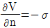
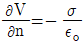
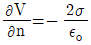
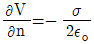
(정답률: 알수없음)
59. 자기모멘트 9.8×10-5[Wbㆍm] 의 막대자석을 지구자계의 수평 성분 12.5[AT/m]의 곳에서 지자기 자오면으로부터 90° 회전시키는데 필요한 일은 약 몇 [J]인가?
- 1.23×10-3[J]
- 1.03×10-5[J]
- 9.23×10-3[J]
- 9.03×10-5[J]
(정답률: 알수없음)
60. 그림과 같은 원형 코일이 두 개가 있다. A의 권선수는 1회, 반지름 1[m], B의 권선수는 2회, 반지름은 2[m]이다. A와 B의 코일중심을 겹쳐 두면 중심에서의 자속이 A만 있을 때의 2배가 된다. A와 B의 전류비 IB/IA는?
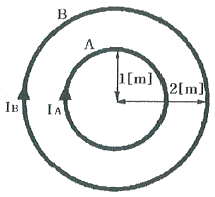
- 1/2
- 1
- 2
- 4
(정답률: 알수없음)
4과목: 전력공학
61. 전력선 a의 충전전압을 E, 통신선 b의 대지정전용량을 Cb, a-b사이의 상호정전용량을 Cab라고 하면 통신선 b의 정전유도전압 ES는?
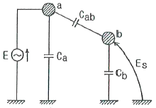
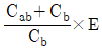
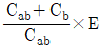
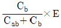
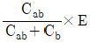
(정답률: 알수없음)
62. 그림과 같은 단거리 배전선로의 송전단 전압 및 역률은 각각 6600[V], 0.9 이고수전단 전압 및 역률이 각각 6100[V], 0.8 일 때 회로에 흐르는 전류 I[A]는? (단, r=10[Ω], x=20[Ω]이다.)
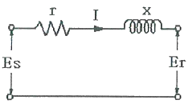
- 96[A]
- 106[A]
- 120[A]
- 126[A]
(정답률: 알수없음)
63. 송전선로에서 가공지선을 설치하는 목적이 아닌 것은?
- 뇌(雷)의 직격을 받을 경우 송전선 보호
- 유도에 의한 송전선의 고전위 방지
- 통신선에 대한 차폐효과 증진
- 철탑의 접지저항 경감
(정답률: 알수없음)
64. 송전선에 직렬콘덴서를 설치하는 경우 많은 이점이 있는 반면, 이상 현상도 일어날 수 있다. 직렬콘덴서를 설치하였을 때 타당하지 않은 것은?
- 선로 중에서 일어나는 전압강하를 감소시킨다.
- 송전전력의 증가를 꾀할 수 있다.
- 부하역률이 좋을수록 설치효과가 크다.
- 단락사고가 발생하는 경우 직렬공진을 일으킬 우려가 있다.
(정답률: 알수없음)
65. 송전선로에 매설지선을 설치하는 목적으로 알맞은 것은?
- 직격뇌로부터 송전선을 차폐보호하기 위하여
- 철탑 기초의 강도를 보강하기 위하여
- 현수애자 1연의 전압 분담을 균일화하기 위하여
- 철탑으로부터 송전선로로의 역섬락을 방지하기 위하여
(정답률: 알수없음)
66. 유효낙차 150[m], 출력 20000[kW], 회전수 375[rpm]인 수차의 특유속도는 약 몇 [rpm] 인가?
- 100[rpm]
- 150[rpm]
- 200[rpm]
- 250[rpm]
(정답률: 알수없음)
67. 전선의 굵기가 동일하고 완전히 연가 되어 있는 3상 1회선 송전선의 대지정전용량을 옳게 나타낸 것은? (단, r[m]: 도체의 반지름, D[m]: 도체의 등가선간거리, h[m]: 도체의 평균 지상 높이이다.)
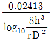
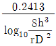
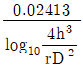
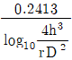
(정답률: 알수없음)
68. 배전용 변전소의 주변압기로 주로 사용되는 것은?
- 단권 변압기
- 3권선 변압기
- 체강 변압기
- 체승 변압기
(정답률: 알수없음)
69. 각각 다른 2개의 전력계통을 연락선(Tie line)을 통하여 상호 연계하면 여러 가지 장점이 있는데. 계통 운용상 이득이 아닌 것은?
- 전력의 융통으로 설비용량이 저감된다.
- 배후 전력이 커져 단락전류가 감소한다.
- 경제적인 발전력 배분이 가능하다.
- 안정된 주파수 유지가 가능하다.
(정답률: 알수없음)
70. 수전용 변전설비의 1차측 차단기의 용량은 주로 어느 것에 의하여 정해지는가?
- 수전 계약용량
- 부하설비의 용량
- 공급측 전원의 단락용량
- 수전전력의 역률과 부하율
(정답률: 알수없음)
71. 500[kVA]의 단상 변압기 상용 3대(결선 △-△), 예비 1대를 갖는 변전소가 있다. 부하의 증가로 인하여 예비 변압기까지 동원해서 사용한다면 응할 수 있는 최대부하[kVA]는?
- 약 2000[kVA]
- 약 1730[kVA]
- 약 1500[kVA]
- 약 830[kVA]
(정답률: 알수없음)
72. 최소 동작전류값 이상이면 일정한 시간에 동작하는 한시 특성을 갖는 계전기는?
- 정한시 계전기
- 반한시 계전기
- 순한시 계전기
- 반한시성 정한시 계전기
(정답률: 알수없음)
73. 기력발전소의 열사이클 중 가장 기본적인 것으로 두 개의 등압변화와 두 개의 단열변화로 되는 열사이클은?
- 재생사이클
- 랭킨사이클
- 재열사이클
- 재생재열사이클
(정답률: 알수없음)
74. 계통의 안정도 증진대책이 아닌 것은?
- 발전기나 변압기의 리액턴스를 작게 한다.
- 선로의 회선수를 감소시킨다.
- 중간 조상 방식을 채용한다.
- 고속도 재폐로 방식을 채용한다.
(정답률: 알수없음)
75. 송전전력. 송전거리, 전선로의 전력손실이 일정하고 같은 재료의 전선을 사용한 경우 단상2선식에 대한 3상3선식의 1선당의 전력비는 얼마인가?
- 0.7
- 1.0
- 1.15
- 1.33
(정답률: 알수없음)
76. 어떤 공장의 수용설비 용량이 1800[kW], 수용률은 55[%] 평균 부하역률은 90[%]라 한다. 이 공장의 수전설비는 몇 [kVA]로 하면 되는가?
- 900[kVA]
- 990[kVA]
- 1100[kVA]
- 1800[kVA]
(정답률: 알수없음)
77. 부하전력 및 역률이 같을 때 전압을 n배 승압하면 ①전압강하와 ②전력손실은 각각 어떻게 되는가?
- ① 1/n, ② 1/n2
- ① 1/n2, ② 1/n
- ① 1/n, ② 1/n
- ① 1/n2, ② 1/n2
(정답률: 알수없음)
78. 3상 동기발전기 단자에서의 고장전류 계산 시 영상전류 I0, 정상전류 I1과 역상전류 I2가 같은 경우는?
- 1선 지락 고장
- 2선 지락 고장
- 선간 단락 고장
- 3상 단락 고장
(정답률: 알수없음)
79. 일반 회로정수가 A, B, C, D 이고 송전단 상전압이 ES인 경우 무부하시 송전단의 충전전류(송전단 전투)는?
- CES
- ACES
- (A/C)ES
- (C/A)ES
(정답률: 알수없음)
80. 그림과 같은 수전단 전력원선도에서 직선 OL은 지상역률 cosθ인 부하직선을 나타낸다. 다음 설명 중 옳지 않은 것은? (단, C점은 원선도의 중심점이다.)
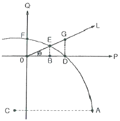
- A점은 이론상의 극한 수전 전력을 표시한다.
- B점은 부하역률이 1일 때의 수전전력을 표시한다.
- G점은 전압조정을 위하여 진상 무효전력이 필요하다.
- F정은 전력이 0이므로 역률조정이 필요 없다.
(정답률: 알수없음)